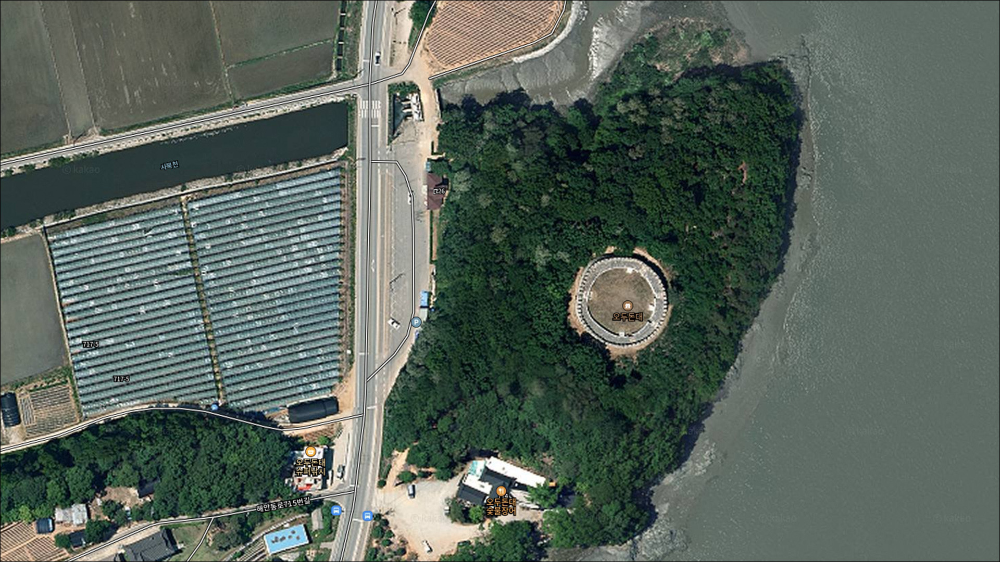
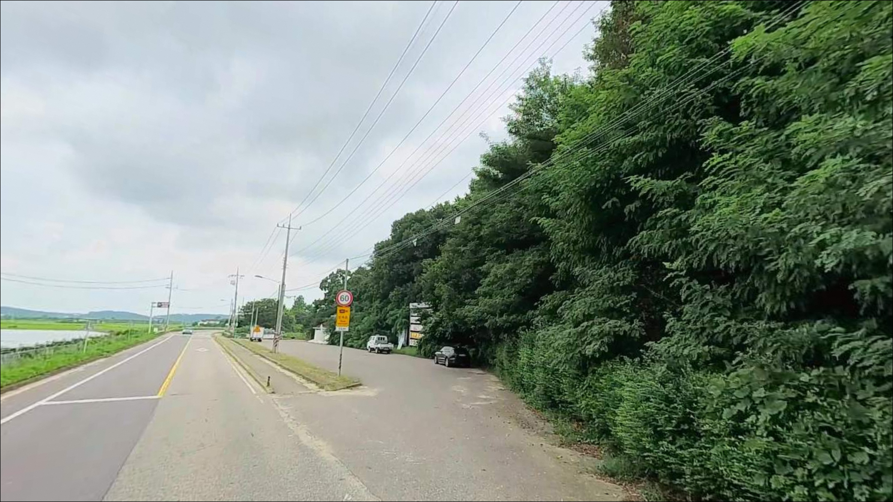
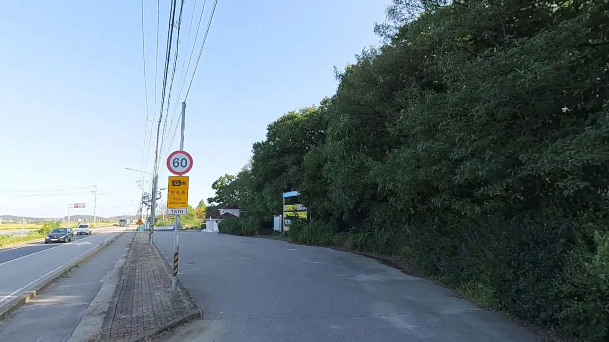
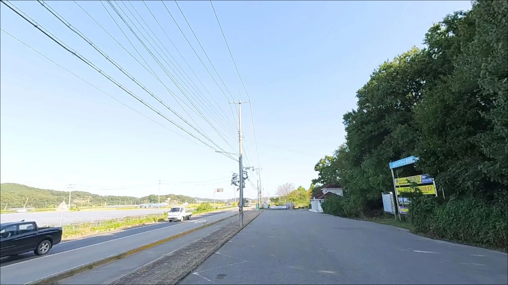
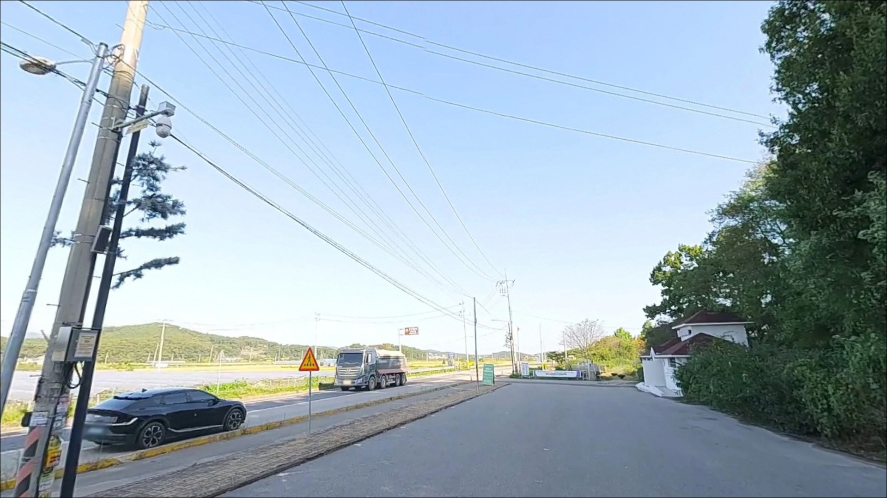
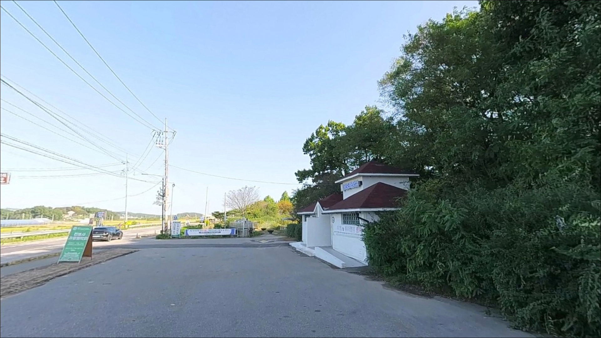
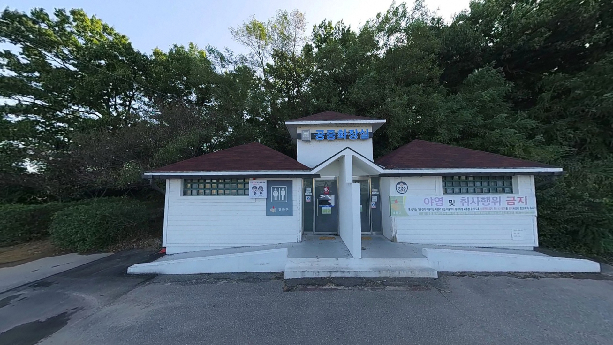
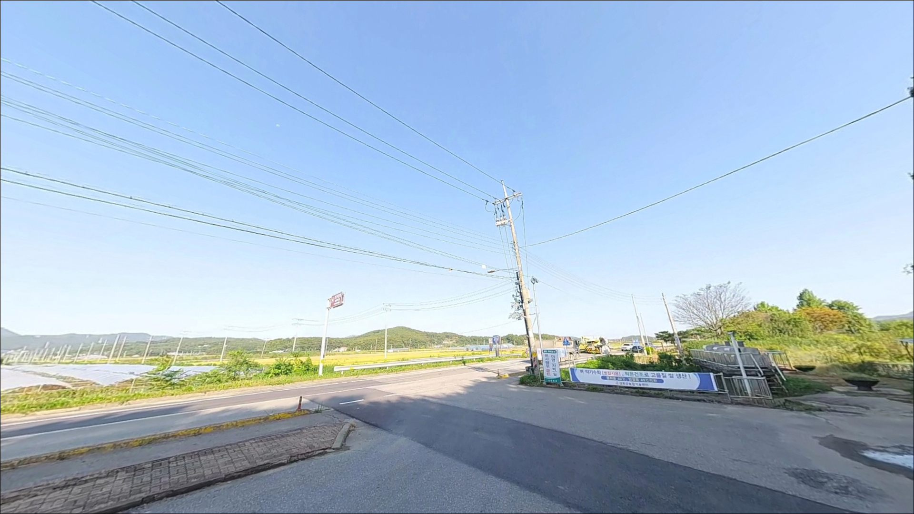
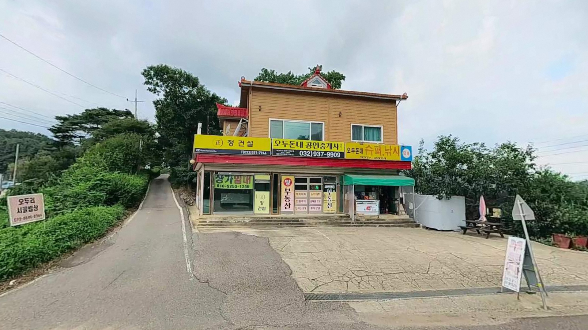

오두돈대, 강화도 인천 강화군 바다의 여운이 오래 남는 차박, 낚시 감성 포인트


포인트 안내
오두돈대
인천광역시 강화군 불은면 오두리 6-2
강화해협 수로를 바라보는 이 해안에서
낚시를 노린다면 물때 확인이 먼저입니다.
서해 특성상 간조에는 갯벌이 넓게 드러나
어떤 채비도 의미가 없는 상황이 만들어지고,
밀물 타이밍을 맞추느냐 여부가
출조 결과 전체를 가릅니다.
강화도 동쪽 해안, 불은면 오두리에 위치한
오두돈대는 한강·임진강·예성강이 합류하는
기수역 수로(염하)를 직접 바라보는 구조입니다.
방파제나 선착장이 없는 갯벌·조간대형 해안으로,
낚시 기록이 많지 않은 미문서 포인트에 가깝습니다.
이 글은 오두돈대의 지형 조건, 진입 환경,
물때 판단 기준, 낚시 방식 적합성에 집중합니다.
조황 단정이나 낚시 허용 여부 확정은
이 글의 범위에 포함되지 않습니다.

1. 진입 동선과 포인트 접근성
강화도 동쪽 해안도로(강화동로)는
벚꽃 드라이브 코스로 알려진 2차로 포장도로입니다.
광성보에서 북쪽으로 1~2km 구간이
오두돈대 방향으로 이어지며,
승용차 기준으로 진입 자체에는
큰 어려움이 없는 편입니다.
다만 오두돈대 서쪽 아래 주차장으로 들어가는
진입로는 별도 확인이 필요합니다.
오두리 마을 방면 내부 도로는
농로 수준의 좁은 구간이 포함될 가능성이 있어
대형 차량이라면 위성지도로
진입 루트를 사전에 확인하는 편이 안전합니다.
주차는 오두돈대 서쪽 공중화장실 인근 공터가
현실적인 후보입니다.
공터 수준의 공간으로 수용 가능한 차량 수가
많지 않을 가능성이 있으며,
해안도로 갓길은 군 관련 차량 통행이
있을 수 있는 구간이라 주의가 필요합니다.

2. 차박 환경과 야간 체류 여건
오두돈대 인근은 민가 밀집도가 낮은
소규모 해안 취락 수준입니다.
야간에는 차량 통행이 거의 없는 편이며,
프라이버시 여건은 상대적으로
나쁘지 않은 환경으로 보입니다.
가로등은 주차장 주변에만 있을 가능성이 높아
개인 조명 장비는 반드시 필요합니다.
다만 강화도 동쪽 해안 전체가
군사시설 보호구역과 인접한 지역입니다.
야간에 군 초소 또는 순찰 차량이
이동하는 구간일 수 있으며,
차박을 메인으로 삼기에는
제약 여건을 사전에 파악해두는 것이 먼저입니다.
오두돈대는 역사유적지(인천시 문화재) 구역과
맞닿아 있습니다.
유적지 내 취사·화기 사용은
원칙적으로 허용되지 않으며,
주차장 인근에서의 야영 가능 여부는
강화군청 또는 현장에서 사전 확인이 필요합니다.


3. 주변 편의시설 및 인프라 현황
오두돈대 서쪽 주차장 인근에는
공중화장실이 확인됩니다.
편의점은 불은면 내에
세븐일레븐 2개 지점이 있으며,
오두리에서 직선으로 3~5km 거리에
위치한 것으로 파악됩니다.
24시간 운영 여부는 현장에서 확인이 필요합니다.
주유소는 불은면 내
강화동로 인근에 한 곳이 확인됩니다.
포인트 인근 도보권 식당으로는
장어구이 전문점이 영업 중인 것으로 파악되나
운영 시간은 방문 전 확인이 필요합니다.
전반적으로 완전 자급 체제로 진입하는 것이
현실적인 준비 방식입니다.
응급 상황 발생 시 강화읍 방향으로
이동 거리가 상당합니다.
연료·비상약품·식수를 출발 전에
충분히 준비해두는 것이 기본입니다.

4. 방문 전 반드시 챙겨야 할 준비사항
오두돈대를 방문하기 전에
가장 먼저 확인해야 할 것은 두 가지입니다.
첫째는 낚시 가능 여부입니다.
이곳은 역사유적지이자 군 인접 지역으로,
낚시 금지 또는 접근 제한 여부가
현재 명확하게 확인되지 않는 포인트입니다.
강화군청이나 현장 관리인에게
출발 전 문의하는 것이 가장 안전합니다.
둘째는 물때 확인입니다.
서해 기수역 특성상 간조에는
넓은 갯벌이 드러나 채비를 넣을 수 없습니다.
바다타임 등에서 인천 기준 물때를 확인하고
밀물 시작 전후 타이밍에 맞춰 입장하는 것이
이 포인트를 제대로 쓰는 방법입니다.
강화해협은 바람이 강해지면
조류도 함께 거세지는 경향이 있습니다.
출조 당일 기상청 해상특보를 한 번 더 확인하고,
조류가 빠른 구간 특성상
여분 채비를 넉넉하게 챙기는 편이 좋습니다.
갯벌과 석축 이동 시 미끄럼 방지 신발과
구명조끼도 기본 장비입니다.

5. 지형 기반 낚시 여건 분석
오두돈대가 면한 강화해협(염하)은
한강·임진강·예성강이 합류하는 기수역 수로입니다.
기수역이란 바닷물과 민물이 섞이는 구간으로,
담수 어종과 해수 어종이 동시에 서식하는
특수한 환경입니다.
조류가 꾸준히 흐르는 수로 특성이
이 해안의 가장 큰 낚시 여건입니다.
지형은 갯벌과 조간대가 발달한 서해 전형 구조입니다.
오두봉 구릉 아래 갯바위나 석축 구조물이
있을 가능성이 있으며,
이런 구조물 기저부에는 우럭과 노래미가
서식하기 좋은 환경이 형성될 수 있습니다.
수심은 밀물 시 어느 정도 확보되는 편이나
간조 전후에는 채비 운용 자체가 어렵습니다.
포인트 남쪽 약 1.5km 지점에는
손돌목(착량)이 있습니다.
물살이 극도로 빠르기로 알려진 구간으로,
오두돈대 일대도 사리 전후에는
조류가 상당히 세어질 가능성이 있습니다.
조금 전후 또는 완만한 조류 타이밍을
노리는 것이 기본 전략입니다.
최신 조황은 가기 전에 반드시 검색해 보시기 바랍니다.


6. 진입 전 알아두면 좋은 낚시 스타일
이 포인트에서 가장 현실적인 선택지는
원투낚시입니다.
기수역 갯벌 구조에서 밀물이 들어오는 타이밍을 맞춰
멀리 채비를 보내는 방식으로,
망둥어와 붕장어가 기대해볼 수 있는 주요 대상입니다.
망둥어는 밀물 시작에 맞춰 입질이 활발해지는
경향이 있어 물때 계산이 중요합니다.
갯바위나 석축 구조물이 있는 구간이 확인된다면
루어낚시도 시도해볼 만합니다.
수중 암초·석축 기저부를 노리는
지그헤드 리그나 웜 계열 채비로
우럭이나 노래미를 바닥층에서 공략하는 방식이
강화권 서해 연안의 일반적인 루어 패턴입니다.
농어 루어도 계절에 따라 노려볼 여지가 있습니다.
강화해협 일대는 바이브레이션·미노우를 활용한
농어 루어 출조 기록이 인근 해역에서 확인됩니다.
오두돈대 구간 직접 기록은 없으나,
밀물 타이밍과 기상 조건이 맞는다면
농어 루어 병행도 고려해볼 수 있는 구간입니다.
찌낚시도 밀물 시 물이 차오를 때
석축 주변을 공략하는 방식으로 활용 가능합니다.

7. 대안 포인트와 플랜 B 동선
오두돈대 낚시 여건이 여의치 않을 때
가장 가까운 대안은
남쪽 약 1.5km 지점의
광성보 해안 구간입니다.
마찬가지로 조류가 강한 구간이나
해안 접근 가능 지점이 있어
유사한 낚시 스타일로 탐색해볼 수 있습니다.
더 안정적인 낚시 여건을 원한다면
남쪽 약 8km 거리의
초지항이 가장 현실적인 대안입니다.
강화도 대표 원투 포인트로,
망둥어 조과 기록이 많고
주차와 진입이 편리합니다.
처음 강화 남동 해안을 탐색한다면
초지항을 기점으로 잡고 오두돈대를
병행 탐색하는 동선이 효율적입니다.
루어낚시 중심이라면
강화 남서쪽의
선두리 방파제도 참고할 만합니다.
광어·우럭 루어 포인트로 알려진 곳으로,
방파제 입구까지 차량 접근이 가능합니다.
차박 여건이 더 좋은 장소를 원한다면
동막해변 방향이 강화도 내에서
일반적으로 많이 찾는 선택지입니다.

물때와 접근 여부를 먼저 확인한다면
오두돈대는 충분히 의미 있는 포인트입니다
강화해협 수로를 바라보는 기수역 해안이라는 점에서
오두돈대의 지형 조건은 낚시꾼 입장에서
흥미로운 구조입니다.
망둥어·우럭·붕장어·농어 등
기수역 특유의 어종을 기대해볼 수 있는
환경 여건은 갖추고 있습니다.
반면 낚시 기록이 적고 접근 제약 가능성이 있어
사전 정보 없이 무작정 찾아가면
헛걸음으로 끝날 가능성이 있습니다.
낚시 허용 여부 확인, 물때 계산, 진입로 사전 파악,
이 세 가지를 갖추고 방문한다면
강화 남동 해안에서 남들이 잘 모르는
조용한 포인트를 직접 개척하는 경험이 될 수 있습니다.
야간 통행이 적고 민가 밀집도도 낮은 편이라
접근 여건이 확인되면 낚시와 차박을 함께 즐기기 좋은 환경이지만,
군 인접 지역 특성을 감안해
밀물 타이밍에 낚시를 마무리하고
조용히 하룻밤 머무는 방식이 이 포인트에 가장 잘 어울립니다.